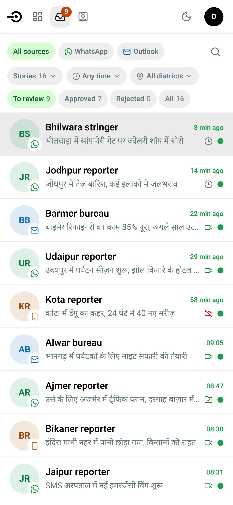
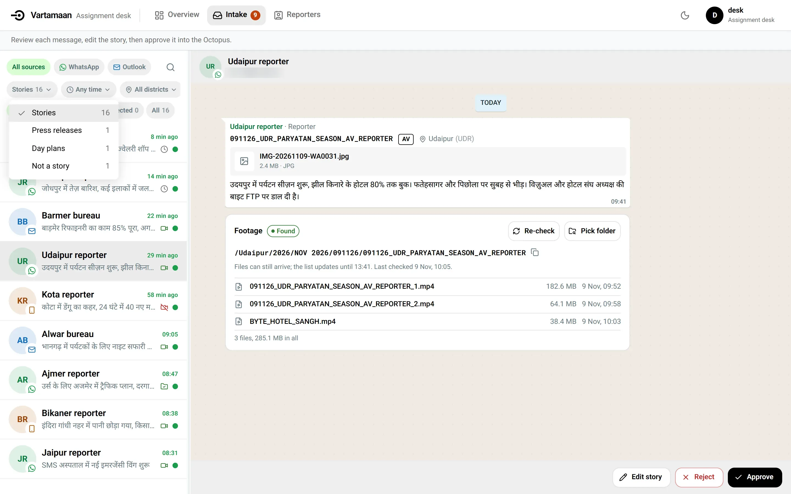
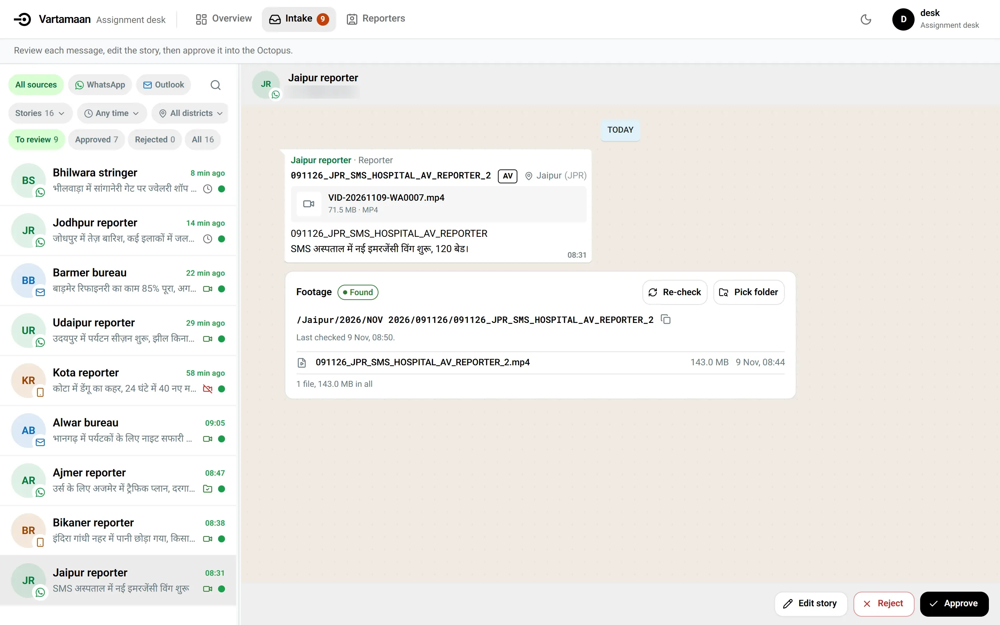
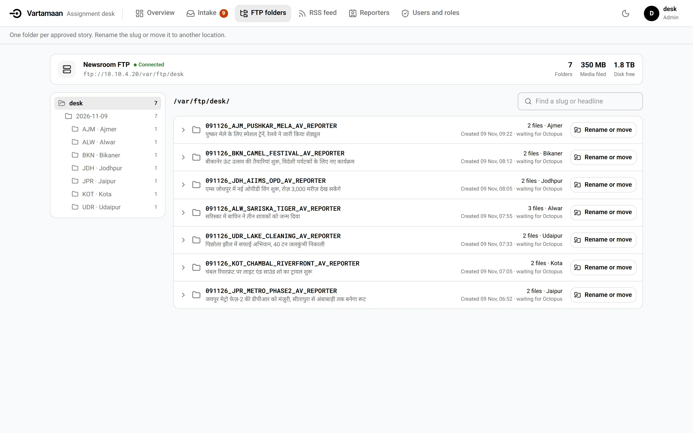
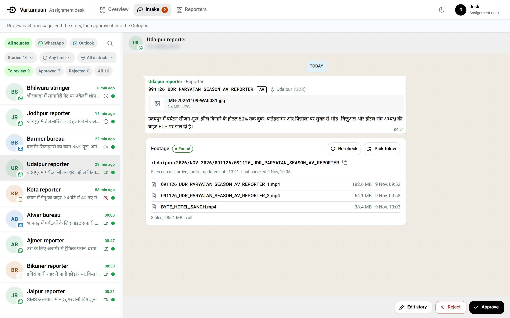
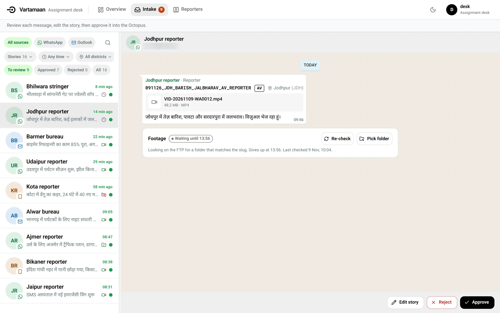
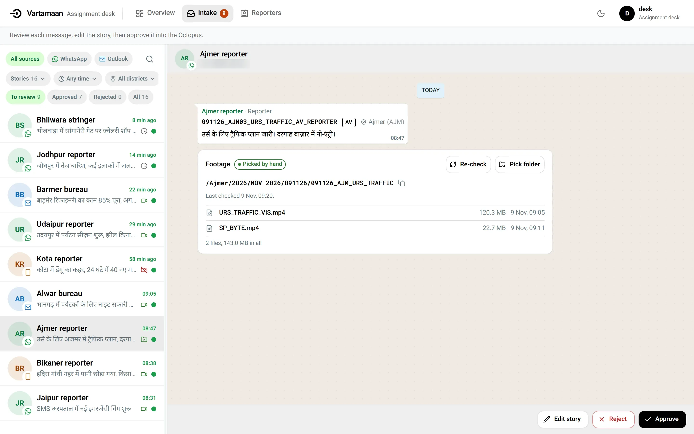
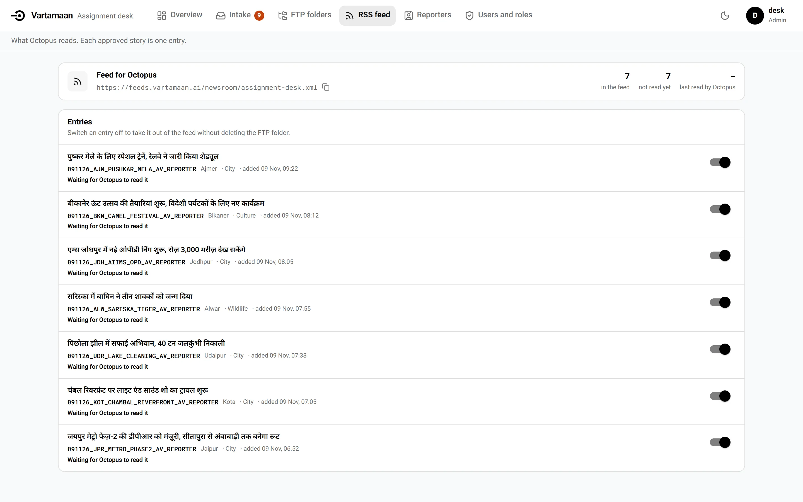

Section B / The DeskHow it works
One story, from the reporter's phone to the Octopus feed
Follow a single file through Vartmaan AI: the Udaipur reporter's tourist-season story, उदयपुर में पर्यटन सीज़न शुरू. Every screen below runs on sample data.
The reporter files the way they already do
WhatsApp, Outlook or the Reporter app. Three sources, and nothing new to learn.
The Udaipur reporter sends a photo and a few lines on WhatsApp. A bureau mails a press note; another reporter uploads a package through the Reporter app. All three land in the same inbox on the assignment desk.
Outlook is checked every 60 seconds. The Reporter app takes up to 20 files in one report. Uploads are capped at 500 MB; anything bigger goes by FTP instead.
The FTP is not a filing channel. Reporters put their footage there, as they always have, and Vartmaan finds it later.

Ninety seconds make one item
Texts, photos and voice notes sent within 90 seconds of each other become a single item for the desk.
Reporters rarely send a story in one message: a photo, then the text, then a voice note. Vartmaan joins the pieces that arrive within 90 seconds into one item, so the desk reads one story, not four fragments.
Each item is sorted as a story, a press release, a day plan or not a story. The default view shows stories only; the rest stay one click away in the same menu.

The slug is kept exactly as the reporter typed it
The slug is the story's name everywhere: in the inbox, on its folder and in the feed.
Reporters type a slug in a fixed pattern, DDMMYY_CITY_SUBJECT_TYPE_REPORTER. Vartmaan keeps it as typed and reads it: in 091126_UDR_PARYATAN_SEASON_AV_REPORTER, 091126 is the date, UDR is Udaipur, PARYATAN_SEASON is the subject and AV is the story type.
If the same slug arrives twice, the second one gets _2 at the end, so two stories never share a name.
Each approved story gets a folder named after its slug. That folder is Vartmaan's own, and it is the only place Vartmaan writes. The desk can rename or move Vartmaan's own story folders.


The footage finds the story
Vartmaan reads the newsroom FTP and matches the reporter's footage to the slug, without touching it.
The matcher looks in the district's FTP folder, whatever its date folders are called, and checks the day folders one day either side. It matches on the exact slug, then on a prefix, then on loose files. A fuzzy match counts only when the date, the reporter and the type all agree.
Footage is often late. Vartmaan scans every 5 minutes and waits up to 4 hours. Each story shows one of five statuses: Waiting, Found, Not found, Picked by hand or Not checked.
When the match is wrong or missing, the desk presses Re-check, or Pick folder to choose the folder by hand. Either way, Vartmaan never changes the reporter's footage.


The district comes from the reporter's city token
Forty-eight districts, read from the code the reporter already types.
The city token in a slug can be written many ways: AJM03, BAL 2, or the city's name in Hindi. Vartmaan maps it to one of 48 districts, so the desk can filter the inbox by district and each folder lands in the right place.
Here the Ajmer reporter typed AJM03 and the story is tagged Ajmer. Its footage was picked by hand, and the panel says so.

The desk edits the story
A plain editor with the fields the newsroom system needs.
Edit story opens the reporter's text in a form: reporter, headline, story text, location, category, priority and slug. The desk corrects, rewrites and fills the gaps. The words are the reporter's and the desk's; Vartmaan does not write the story.
Then the desk decides: Approve, Reject, or Move back to review. Stories carry one of 10 story types and sit in one of 6 review states.

Approve, and the story enters the Octopus feed
Approved stories reach the newsroom system as a feed, with FLASH, UPDATE and KILL.
Approve waits until the story's files are on the FTP, then adds the story to the feed for Octopus, with a Hindi byline. An entry can go out as a FLASH, be followed by an UPDATE, or be taken back with a KILL.
Each story shows where it is on one line:
- Received
- Media
- Review
- FTP folder
- RSS feed
FLASHUPDATEKILL
Octopus reads the feed. Nothing reaches it until a person on the desk has pressed Approve.
